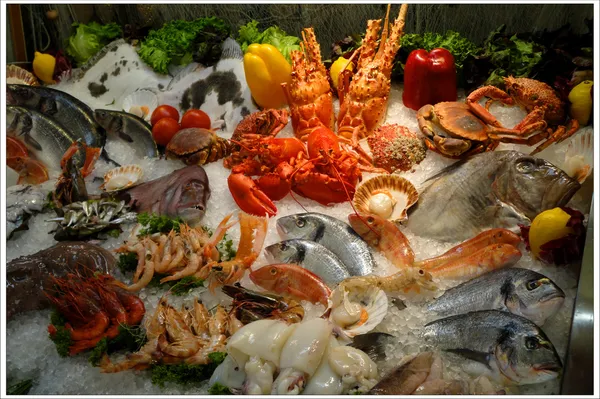
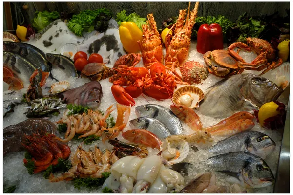

SEAFOODS
Enter a realm where words paint pictures, ideas spark conversations, and curiosity leads the way. This is my digital abode—a place of stories, musings, and shared experiences. Join me as we explore the wonders of life, from the mundane to the extraordinary. Through prose and poetry, let's embark on a journey of discovery, where every post is an invitation to connect, reflect, and find inspiration. Welcome to my corner of the internet—a space where stories come alive, and readers become friends.
Personal Blog 
